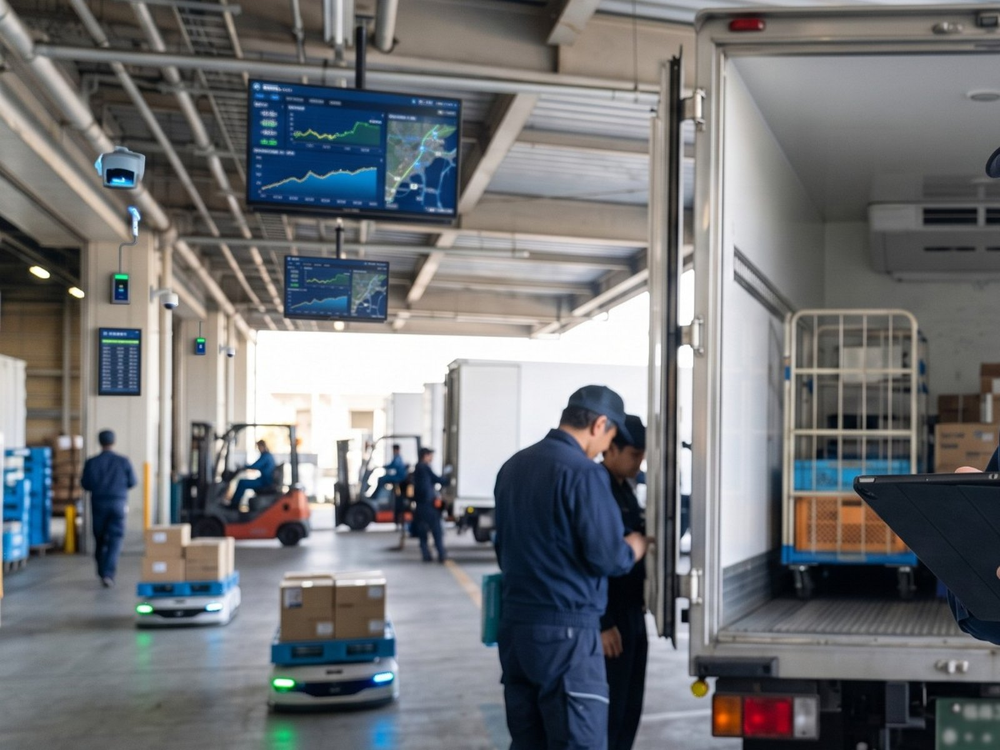
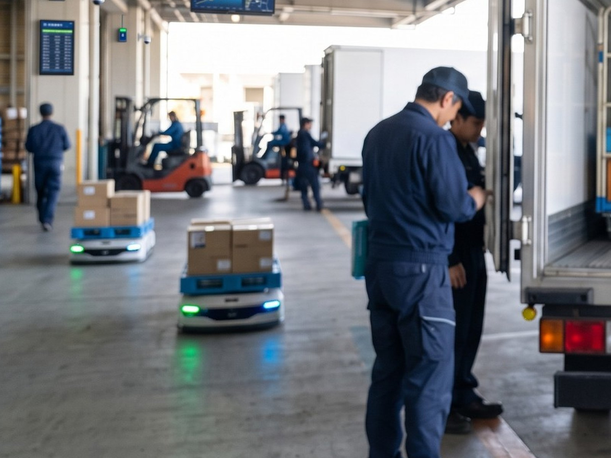

DTS / INTERVIEW
運ぶだけではない。
物流を、止めない仕事。
食品物流を中心に、配送計画や運行状況を確認しながら、安全・品質・時間を守って商品を届けます。輸送を実行するだけでなく、運行の可視化や改善にも関わる仕事です。
仮プロフィール※ 氏名・所属・役職・入社年・前職・担当領域は未確認です
- 所属・役職
- DTS／運送部（配車・運行管理）
- 入社年月・入社区分
- —
- 前職・これまでの経験
- —
- 担当業務
- 配車・運行管理／配送計画／DTSシステムの活用／ドライバー・物流センターとの連携
CAREER STEP
※ キャリアステップは、正式回答とご本人確認のうえ掲載します。年・前職などの仮情報は表示していません。
ENTRY
PALに入るまで
Q01入社前から現在までのご経歴を、年・担当業務・変化が分かる形で教えてください。
物流・運送の領域で経験を積んだあとPALに入り、いまは配車や運行管理に加えて、輸送の改善にも関わっています。
※ 年・担当業務・役割の変化は、正式回答とご本人確認のうえ差し替えます。現時点では確定情報を掲載していません。
Q1PALに入社したきっかけを教えてください。
運ぶところだけで終わらない仕事がしたい、と思っていました。
PALなら倉庫側の動きやデータまで含めて輸送を見られそうだと感じたことが、決め手です。
WORK
輸送を動かす仕事
Q2普段どのような仕事を担当していますか？
その日の配送状況を確認しながら、配車や運行管理、配送計画の調整を行っています。
DTSのシステムで運行の状況を見ながら、どこを組み替えるかを決めています。
ドライバーだけでなく、物流センター側とも情報を共有しながら進めています。
Q3PALの運送部だからこそ経験できる仕事や、一般的な運送会社との違いは何だと思いますか？
運ぶことだけを切り出して考えなくていいところだと思います。
倉庫の出荷状況、配送、運行データ、システム、お客様の事情。つながったまま考えられます。
どちらが良いという話ではなく、見える範囲が広い分、できることも多いと感じています。

安全を最優先に配車・運行を管理し、データから改善につなげる。
- 配送計画を確認する
- 車両と荷物を確認する
- 出発を管理する
- 運行状況を見る
- 遅れに対応する
- 実績を確認する
- 計画に反映する
運ぶことが仕事ではなく、届け続けられる物流をつくることが仕事です。
※ この言葉は仮原稿です。正式回答から選び直します。
JUDGE
判断とデータ

Q4予定どおりにいかないとき、どう判断していますか？
交通の状況、配送の時間、センター側の状況、ドライバーの状況を確認します。
そのうえで、何を優先して守るかを決めます。全部を元の計画に戻そうとはしません。
早く状況をつかむほど、選べる手が増えると思っています。
※ 具体的なエピソード・事例は、社外公開の可否を確認のうえ、正式回答で差し替えます。
Q5時間・品質・安全のなかで、一番難しい管理は何ですか？
どれか一つを優先すればいい、というものではないところです。
食品を扱うので、時間どおりに着くことだけでなく、商品の状態にも気を配る必要があります。
迷ったときは安全を最優先にして、そのうえで届け方を組み直します。
Q6DTSのシステムや運行データを、実際の業務でどのように活用していますか？
いまの運行状況が見えることで、遅れや変更に早く気づけるようになります。
連絡を待ってから動くのと、先に気づいて動くのとでは、打てる手が変わります。
実績が残るので、どの区間で時間がかかりやすいかを見直して、次の配車に反映しています。
PAL
PALらしい物流
毎日、当たり前に届く。その当たり前を守るのが輸送の仕事です。
Q7今の仕事で、最も面白いと感じる瞬間は？
組み直した計画が、そのとおりに回ったときです。
トラブルになりそうだったところを、先に手を打って避けられたときにも手応えがあります。
Q8PALらしいと感じるのはどんなときですか？
運送部だけで抱えないところです。
運行で気づいたことを現場運営やFDE、システム部に伝えると、見え方そのものを変えてもらえることがあります。
FUTURE
これから
Q9今後、PALの運送事業をどのように広げていきたいですか？
食品物流で積み上げてきたやり方を、ほかの配送でも使える形にしていきたいです。
運行データが溜まるほど、計画の精度は上げられると思っています。
※ 事業計画に関わる内容は、正式回答と社内確認のうえ掲載します。
Q10一緒に働くメンバーや職場の雰囲気について教えてください。
状況が変わったときに、すぐ声を掛け合える雰囲気です。
一人で抱えず、その場で相談して決めることが多いです。
Q11どのような人がDTS事業部の仕事に向いていると思いますか？
状況が変わっても対応できる方だと思います。
周囲と連携できること、安全を大切にできること、そして判断を先送りしないこと。この3つは特に大事だと感じます。
Q12応募を考えている方へメッセージをお願いします。
運転の経験があるかどうかよりも、現場の状況を見て次の一手を考えられる方であれば活かせる仕事です。
ドライバーの目線に立ちながら、安全を最優先に考えられる方と働きたいです。
1 DAY SCHEDULE
ある一日の流れ。
- 運行状況・車両確認
その日の配送計画と車両の状態、倉庫側の出荷状況を確認。
- 出発確認
積み込みと届け先ごとの条件を確認し、配送を開始。
- 運行状況の確認・調整
遅れが出そうな便を早めに把握し、順番や経路を組み直す。
- 午後便の計画確認
午前の実績をふまえ、午後の配車と出発時間を調整。
- 配送先・センターとの調整
到着時間の変更や受け入れ条件を共有し、先回りして対応。
- 実績確認・振り返り
運行データを確認し、遅れの出た区間と理由を記録。
- 翌日の運行準備
翌日の配送計画と車両の割り当てを確認して終了。
※ デザイン確認用の一例です。勤務時間・休憩・退勤時刻などを会社の制度として示すものではありません。